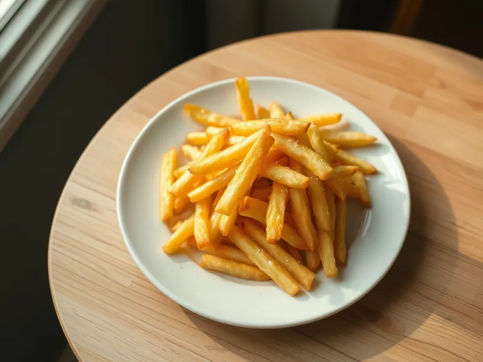

Картофель фри на сковороде
Хрустящие брусочки картофеля, обжаренные в масле на обычной сковороде
40 мин4 порц.289 ккал на порциюБ 4 · Ж 16 · У 33Американская кухня
Открыть в приложении: порции, таймеры, список покупок
Продукты на 4 порц.
- Картофель7 шт
- Растительное масло60 мл
- Соль1 ч. л.
- Паприка по желаниюпо вкусу
- Вода по желанию1500 мл
Как готовить
- Очистите картофель и нарежьте брусочками толщиной 7-8 мм.
- Залейте холодной водой на 10 минут, чтобы ушёл лишний крахмал, затем слейте воду и очень тщательно обсушите брусочки полотенцем.
- Налейте масло в сковороду слоем 1,5-2 см и разогрейте на среднем огне: брошенный брусочек должен сразу покрыться пузырьками.
- Обжаривайте картофель небольшими партиями в один слой 6-8 минут, переворачивая, пока он не станет золотистым и хрустящим, а внутри мягким.
- Шумовкой выложите фри на бумажное полотенце, чтобы ушло лишнее масло.
- Посолите сразу, пока картофель горячий, по желанию посыпьте паприкой и подавайте.
Совет. Не кладите в сковороду много картофеля за раз: масло остынет, и фри получится мягким и жирным.